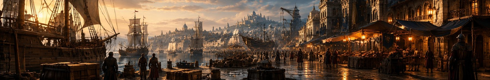

Haxabay
⚓ Haxabay Stolica Varellis · Miasto portów, handlu i wpływów „W Haxabay wszystko ma swoją cenę. Pytanie tylko, kto ją zapłaci.”
Haxabay jest stolicą Varellis i jednym z najważniejszych portów handlowych Athelonu. Do jego nabrzeży zawijają statki z odległych krain, a przez miejskie składy, kantory i targowiska przepływają towary oraz pieniądze o wartości trudnej do wyobrażenia.
„W Haxabay wszystko ma swoją cenę. Pytanie tylko, kto ją zapłaci.”
❖Informacje ogólne
Haxabay jest stolicą Varellis i jednym z najważniejszych portów handlowych Athelonu. Do jego nabrzeży zawijają statki z odległych krain, a przez miejskie składy, kantory i targowiska przepływają towary oraz pieniądze o wartości trudnej do wyobrażenia.
To miasto możliwości, kontraktów i wielkich fortun, ale również oszustw, przemytu, szantażu oraz płatnych zabójstw. Uczciwi kupcy i handlarze działający na granicy prawa są tu równie liczni. W Haxabay pieniądz jest obecny niemal wszędzie, a jego wpływ można dostrzec zarówno w wielkich salach kupieckich, jak i w najciemniejszych zaułkach portu.
⌛Historia
Haxabay rozwinęło się dzięki położeniu nad morzem i dostępowi do szlaków łączących różne części Athelonu. Z niewielkiego portu stopniowo wyrosło na potężny ośrodek wymiany, do którego zaczęli ściągać armatorzy, kupcy, rzemieślnicy i poszukiwacze fortuny.
Wraz z rozwojem portu rosły wpływy najbogatszych rodów i organizacji kupieckich. Z czasem coraz większą rolę zaczęła odgrywać Meridian Exchange. Jej sieć kontaktów, kapitał i zdolność finansowania przedsięwzięć sprawiły, że stała się nie tylko najważniejszą gildią miasta, ale również siłą, z którą musiała liczyć się książęca władza.
Współczesne Haxabay jest efektem tej zależności. Książę zachował formalną władzę, lecz gospodarcza potęga gildii ogranicza jego swobodę działania. Historia miasta nadal się pisze, a rywalizacja o wpływy trwa każdego dnia - najczęściej przy stole negocjacyjnym, rzadziej na ulicach.
⚖Gospodarka i handel
Handel jest podstawą istnienia Haxabay. Port obsługuje przewóz surowców, żywności, wyrobów rzemieślniczych, luksusowych tkanin, przypraw, metali, drewna i towarów sprowadzanych z dalekich stron. Wokół nabrzeży powstały magazyny, składy, kantory, warsztaty naprawcze oraz przedsiębiorstwa zajmujące się transportem.
W mieście można znaleźć niemal każdy legalny towar, jeśli kupujący dysponuje odpowiednimi środkami i kontaktami. Równolegle działa handel nieoficjalny. Niektóre towary trafiają do portu bez wpisu w księgach celnych, inne zmieniają właściciela poza oficjalnymi aukcjami.
Handel oficjalny
Kontrakty, aukcje, transport morski, magazynowanie, pożyczki i ubezpieczenia ładunków. Reputacja oraz zdolność dotrzymywania umów mają tu wymierną wartość.
Handel nieoficjalny
Przemyt, fałszywe dokumenty, zakazane towary, kradzione ładunki, poufne informacje i usługi, których nie znajdzie się w miejskich rejestrach.
Granica między tymi dwoma światami bywa płynna. Niektórzy kupcy prowadzą całkowicie legalne interesy za dnia, a po zmroku korzystają z usług pośredników działających poza prawem.
◆Meridian Exchange
Meridian Exchange jest najważniejszą gildią kupiecką Haxabay i jedną z najpotężniejszych organizacji gospodarczych Athelonu. Zrzesza kupców, armatorów, bankierów, pośredników i właścicieli przedsiębiorstw. Jej wpływy wynikają przede wszystkim ze skali kapitału, liczby obsługiwanych transakcji oraz rozległej sieci kontaktów.
Gildia kontroluje lub współfinansuje znaczną część infrastruktury handlowej miasta. Zapewnia kredyty, organizuje transport, pośredniczy w kontraktach i ubezpiecza ładunki. Nie musi być właścicielem każdego statku czy magazynu, by mieć wpływ na ich działalność. Wystarczy, że przedsiębiorcy potrzebują jej finansowania, kontaktów albo dostępu do lukratywnych zleceń.
Meridian Exchange posiada również własną armię stacjonującą w Haxabay. Jej zadaniem jest ochrona interesów gildii, konwojów, magazynów, siedzib i transportów. Oddziały są utrzymywane z prywatnych środków organizacji i nie podlegają księciu.
✦Religia i wierzenia
Wierzenia mieszkańców Haxabay są zróżnicowane, co wynika z portowego charakteru miasta i stałego napływu przybyszów z różnych krain. W mieście można spotkać świątynie, kaplice i niewielkie miejsca kultu poświęcone rozmaitym bóstwom.
Nie ustalono jednej dominującej religii ani oficjalnego kultu miasta. Dla wielu mieszkańców ważniejsze od deklarowanej wiary są osobiste rytuały związane z podróżą, powodzeniem w interesach, bezpieczeństwem na morzu i ochroną rodziny.
⛰Port i geografia

Haxabay leży na wybrzeżu Athelonu, a jego układ przestrzenny podporządkowany jest portowi. Główne nabrzeża i doki stanowią gospodarczą oś miasta. W ich sąsiedztwie znajdują się składy, place przeładunkowe i warsztaty, dalej zaś rozciągają się targowiska, dzielnice mieszkalne i rezydencje najbogatszych mieszkańców.
Wielki Port jest stale zajęty przez statki handlowe, jednostki transportowe i mniejsze łodzie obsługujące ruch przybrzeżny. Wzdłuż nabrzeży pracują dźwigi, tragarze, cieśle i robotnicy portowi. Ruch nie ustaje wraz z zachodem słońca - część załadunków i rozładunków odbywa się również nocą.
Szczegółowe ukształtowanie wybrzeża, przebieg murów i położenie poszczególnych dzielnic pozostają do dopracowania na mapie miasta.
♛Władza i polityka
Haxabay jest rządzone przez księcia Edrica Varena , około trzydziestopięcioletniego władcę, który mimo młodego wieku zdążył już poznać mechanizmy miejskiej polityki. Jest ambitny, zdecydowany i nie zamierza pogodzić się z tym, że znaczna część wpływów wymknęła się spod kontroli książęcego dworu.
Edric dąży do stopniowego odzyskiwania kompetencji i niezależności. Wzmacnia własne zaplecze, szuka sojuszników i próbuje ograniczać przywileje gildii tam, gdzie jest to możliwe. Nie jest jednak naiwny. Wie, że otwarta wojna z Meridian Exchange mogłaby sparaliżować handel, doprowadzić do kryzysu i podzielić samo miasto.
Książę przyznaje, że zawierał z Meridian Exchange różne układy i dokonywał z nią wymian. Nie uważa tego za kapitulację, lecz za konieczny pragmatyzm. W jego przekonaniu władca musi umieć zawierać kompromisy, nawet z przeciwnikiem, którego wpływy chciałby ograniczyć.
Relacja księcia z gildią jest napięta, ale obie strony rozumieją, że potrzebują stabilnego Haxabay. Edric nie chce zniszczyć Meridian Exchange. Chce sprawić, by ponownie musiała liczyć się z jego decyzjami.
◆Dzielnice miasta
Haxabay jest rozległym miastem, którego dzielnice wyrosły wokół portu, targowisk i dawnych osad kupieckich. Poniższy podział stanowi podstawowy zarys miasta i może zostać rozwinięty o konkretne lokacje.
Wielki Port
Nabrzeża, doki, stocznie, urzędy celne, magazyny i place przeładunkowe. To tutaj zaczyna się i kończy większość interesów miasta.
Złoty Kwartał
Rezydencje najbogatszych kupców, banki, kantory, eleganckie domy aukcyjne i siedziby wielkich przedsiębiorstw.
Górny Rynek
Największe targowiska, hale kupieckie, sklepy z egzotycznymi towarami i miejsca publicznych negocjacji.
Stare Haxabay
Najstarsza część miasta, w której zachowały się dawne kamienice, warsztaty, świątynie i siedziby starych rodów.
Dolne Nabrzeże
Tawerny marynarzy, noclegownie, drobni handlarze, spelunki i lokale, w których łatwo znaleźć pośrednika od nieoficjalnych interesów.
Dzielnica Rzemieślników
Warsztaty, kuźnie, szkutnicy, powroźnicy, bednarze i manufaktury obsługujące port oraz kupieckie przedsiębiorstwa.
⚔Armia i siły zbrojne
W Haxabay funkcjonują dwie niezależne struktury militarne. Ich obecność jest jednym z najbardziej widocznych przejawów podziału wpływów w mieście.
Wojska Książęce
Oficjalne siły zbrojne Haxabay, podlegające księciu. Odpowiadają za obronę miasta, mury, bramy, bezpieczeństwo publiczne i wykonywanie rozkazów władzy miejskiej. Ich rzeczywista siła jest osłabiana przez odpływ doświadczonych żołnierzy.
Armia Meridian Exchange
Prywatne oddziały gildii, finansowane z jej ogromnych zasobów. Chronią konwoje, magazyny, statki, siedziby i interesy organizacji. Nie są częścią wojsk książęcych i nie podlegają miejskiej komendzie.
Podkupywanie żołnierzy
Meridian Exchange regularnie oferuje żołnierzom książęcym lepszy żołd, premie, stabilniejsze warunki służby i możliwości awansu. Dla wielu ludzi jest to oferta trudna do odrzucenia. W efekcie książę może dysponować armią, której stan na papierze nie zawsze odpowiada rzeczywistej liczbie lojalnych i gotowych do walki żołnierzy.
W razie otwartego konfliktu między księciem a gildią nie można zakładać, że wszystkie oddziały książęce pozostaną wierne Edricowi. Część może odmówić wykonania rozkazów, zachować neutralność lub przejść na stronę Meridian Exchange.
☻Mieszkańcy i półświatek
Haxabay przyciąga ludzi z całego Athelonu. W porcie spotykają się różne rasy, języki i zwyczaje. Pochodzenie przybysza ma mniejsze znaczenie niż jego reputacja, kontakty i zasobność sakiewki. Miasto daje szansę na szybki awans społeczny, ale równie łatwo można tu stracić majątek.
Wśród handlarzy można znaleźć zarówno uczciwych przedsiębiorców, którzy latami budują zaufanie klientów, jak i ludzi, dla których oszustwo jest zwyczajnym kosztem prowadzenia interesu. Obie grupy są w mieście liczne. Nie istnieje jedna dominująca natura Haxabay - uczciwość i bezwzględność funkcjonują obok siebie.
Przestępczość jest obecna w wielu warstwach społecznych. Przemyt, kradzieże ładunków, fałszowanie dokumentów, szantaż i handel informacjami są częścią miejskiego podziemia. Zlecenie zabójstwa konkretnej osoby również nie jest czymś niespotykanym. Istnieją pośrednicy i zawodowi wykonawcy, którzy przyjmują takie zlecenia, choć nie oznacza to, że śmierć jest codziennym widokiem na ulicach.
◆Ciekawostki
W Haxabay reputacja kupca potrafi być cenniejsza niż jego majątek, ale tylko do czasu, gdy pojawi się odpowiednio wysoka oferta.
Meridian Exchange nie musi zajmować książęcych urzędów, by wpływać na decyzje podejmowane w pałacu.
Żołnierze gildii i wojska książęce mogą patrolować te same ulice, choć służą różnym interesom.
Wielu mieszkańców traktuje negocjacje jako naturalny sposób rozwiązywania sporów. Nie każdy konflikt kończy się jednak przy stole.
W mieście można znaleźć zarówno oficjalne domy aukcyjne, jak i zamknięte licytacje, o których nie wspominają żadne miejskie rejestry.